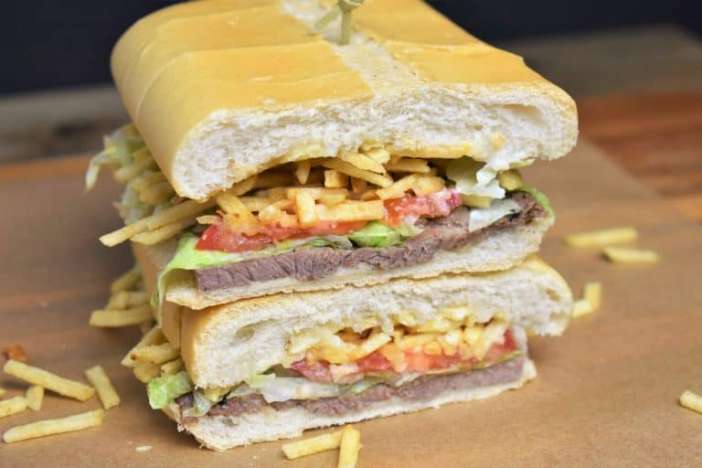

Pan con Bistec

A Zesty and Hearty Sandwich
If you’ve ever visited Miami then you’ve probably eaten a pan con bistec sandwich. It’s super popular in cafes
and restaurants and for good reason. Now you can make it at home, it’s so easy. The most difficult part of this
recipe is waiting around while the onions caramelize. This sandwich comes together so easily and can be served
with French fries,
onion rings, or tomato avocado salad.
Ingredient
- 1 lb large top round beef steaks (4 thinly sliced steaks)
- 1 teaspoon kosher or sea salt
- 1 teaspoon garlic powder
- 1/2 teaspoon dried oregano
- 1/4 teaspoon cumin
- Pinch of black pepper
- 2-3 tablespoon canola oil
- 1 small yellow onion (thinly sliced)
- 2 loaves cuban bread
- 4 ounces potato sticks
- 2 tablespoon mayonnaise
- 2 cups lettuce
- 2 tomatoes (sliced)
- Butter
Instructions
Prepare the steaks
- Combine the salt, garlic powder, oregano, cumin and black pepper in a small bowl. Season the steaks on both
sides with the seasoning mix.
- Heat 2 tbsp. of oil in a large (very large) skillet over medium-high heat. When the oil is very hot, almost
smoking, add as many steaks that will fit in the skillet without overcrowding.
- Cook the steaks about 2-3 minutes per side, until they’re golden brown and cooked through. Take the skillet
off the heat, remove the steaks to a plate or pan and keep warm. Repeat with the remaining steaks. Note: It
may be necessary to add another tablespoon of oil to cook the second batch of steaks.
Cook the onions
- Do not wash the skillet, return it to medium-low heat and add the sliced onions. Cook the onions, stirring
frequently, for 3-5 minutes until they start to soften, stirring frequently. Remove the skillet from the
heat and set aside.
Assemble the pan con bistec
- Cut the loaves of bread to make 4 large pieces. Then open each piece by slicing it in half lengthwise.
- Add one steak and a quarter of the onions to the bottom half of the bread piece. Then add the mayonnaise,
lettuce and tomato slices, if using. Add a generous amount of potato sticks and cover with the top piece.
- Gently, press the pan con bistec for a few minutes until the bread is toasty and starting to flatten out. If
desired, brush a little bit of butter on the bread top prior to pressing to get a pretty sheen.
Back to home